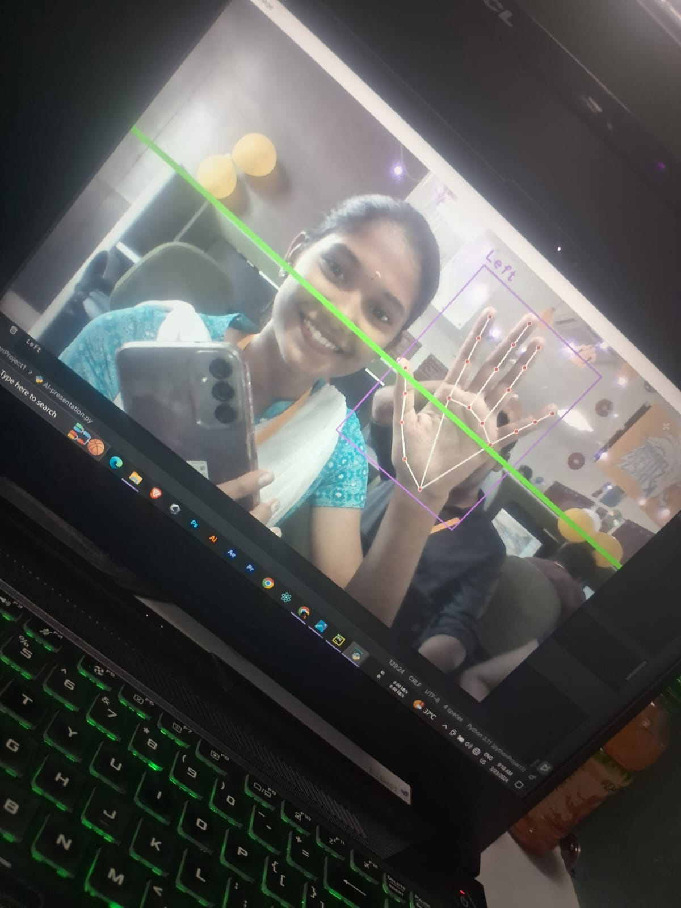

My Projects
🧠 AI-Based Gym Trainer App
- Developed a fitness app using AI that gives real-time posture corrections and workout plans.
- Built using Python, OpenCV, and TensorFlow.
- Increased user accuracy by 40% through feedback-based training.
-
Screenshot:
💻 AI-Based PPT Controller with Hand Gestures
- Created a presentation controller using hand gestures via webcam.
- Built with MediaPipe + Python + PyAutoGUI.
- Useful for hands-free corporate presentations.
-
Screenshot:

🧪 PCOD Nano Sensor Project (SERB)
- Part of SERB-funded nano sensor project for detecting PCOD symptoms.
- Learned biomedical coding + device design pipeline.
- Worked as junior on college-level research.
-
Screenshot: